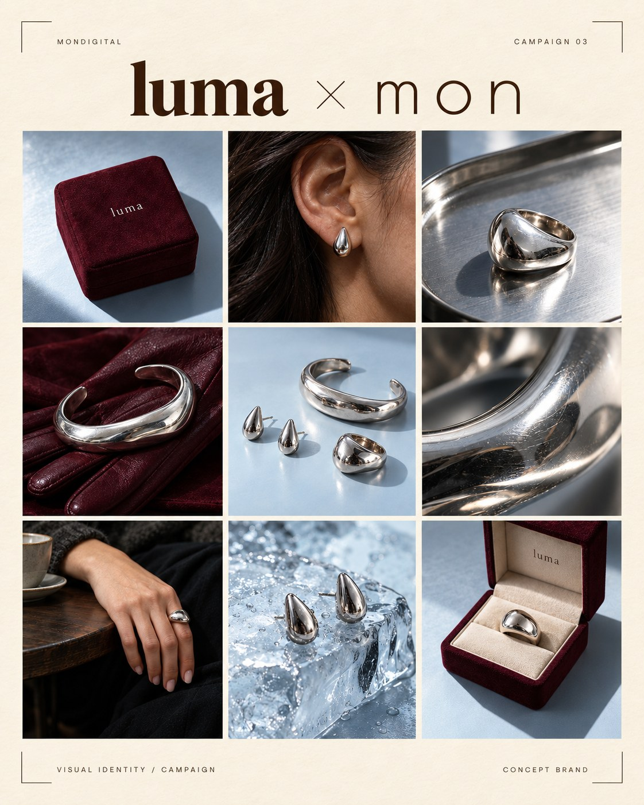

Concept brand
LUMA
Light leaves a trace.
- Purpose and idea
- For LUMA, we centered on silver’s sculptural form and its surface that changes with light. Bringing workshop details, product close-ups and lifestyle scenes into one series, we treated jewelry as both a design object and a personal expression.
- What MON handled
- AI-assisted scene, visual and motion production.
- Outputs and formats
- 14-second film, nine-frame campaign visual series. Format: vertical film, 4:5 visual series.
- Status
- Concept brand work. Not created as part of a commercial brand collaboration.
